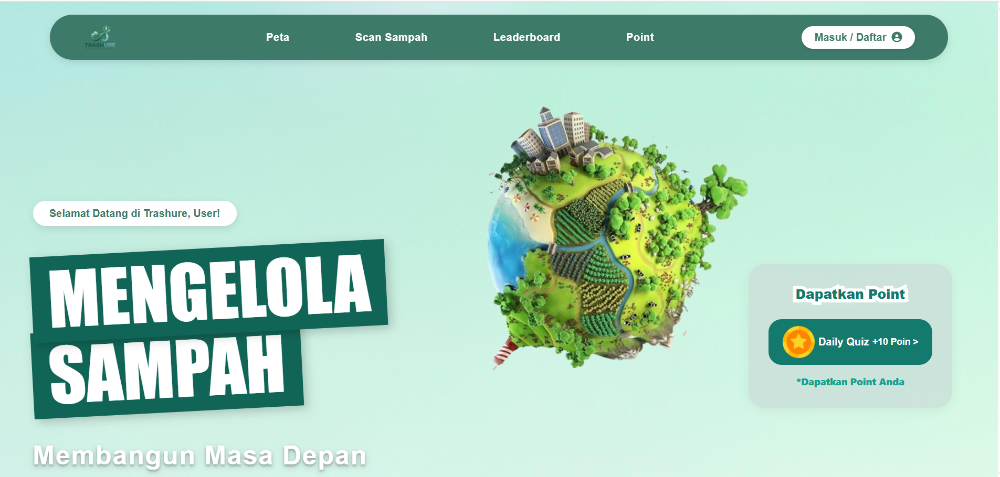

WEB DEVELOPMENT • EDUCATION

Trashure is a web-based platform designed to optimize waste management and promote eco-friendly practices. The system enables users to efficiently track, report, or trade recyclable waste, creating an accessible digital ecosystem for environmental sustainability.
Serving as both frontend and backend developer, I built the application end-to-end. I designed dynamic, user-friendly interfaces on the frontend while developing server-side logic and database architecture on the backend. The primary challenge was integrating dynamic PHP processes with responsive JavaScript interactions to ensure seamless user workflows and data synchronization.
HTML, CSS, JavaScript, PHP, and MySQL.